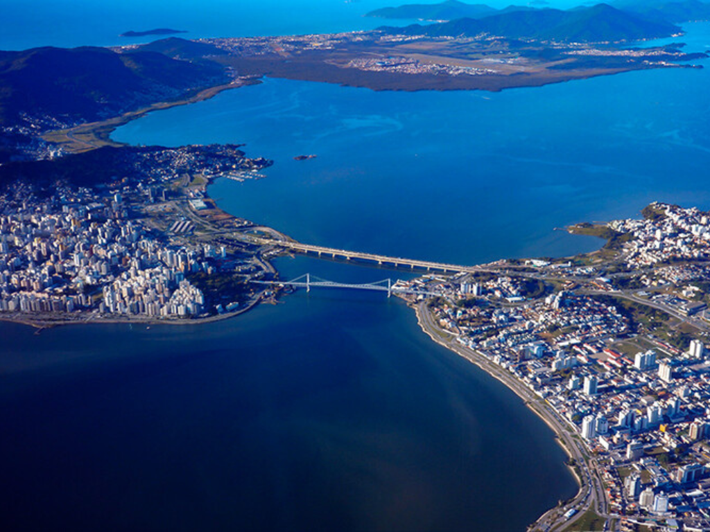

Santa Catarina é um estado localizado na região Sul do Brasil, conhecido por suas belas praias, como Balneário Camboriú e Florianópolis, que é sua capital e uma das principais cidades turísticas do país. O estado possui uma economia forte, baseada na indústria, agricultura e turismo, além de uma cultura influenciada por diversas imigrações europeias, especialmente alemãs e italianas. Santa Catarina é reconhecida por sua qualidade de vida, belezas naturais e desenvolvimento econômico.
